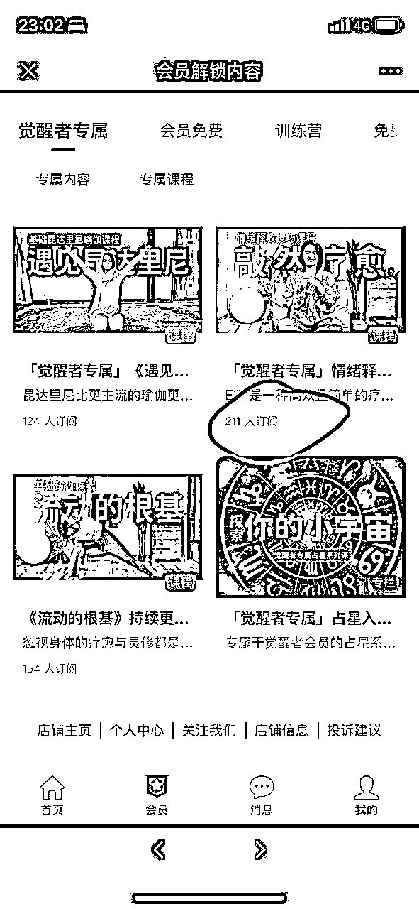
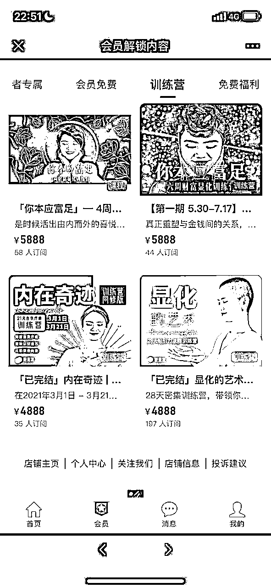
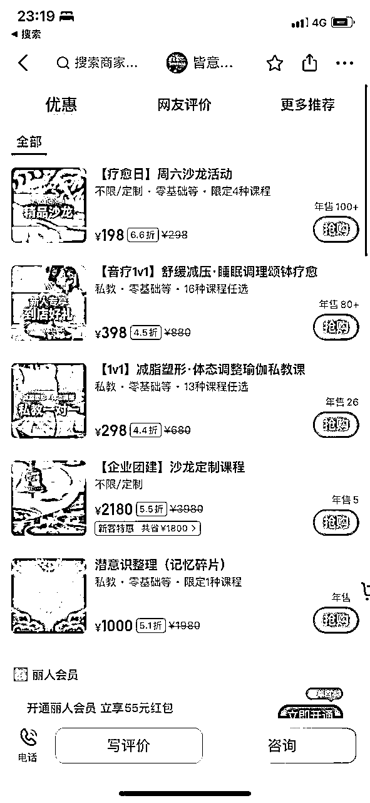

来源：https://wfxjxt5sza.feishu.cn/docx/YEoYdq6dhoLMOOxSTetcvlj5nEc
疫情开放后，年轻人更在意自己身体及心理的健康程度
在高速和高压的生活中，都希望有一个可以迅速恢复身心能量的方式
就自己身边人，很多人白天养生（枸杞加红枣），晚上养“心”（正念，冥想）
而且在生财听到多次听到多个大佬提到身心灵赛道
所以向拆解了解下身心灵赛道是怎么盈利及门槛有哪些
什么是身心灵
包括身体的健康、健身运动、饮食营养、睡眠质量等
如:舞动、芳香疗法、身体调理、瑜伽、冥想、音乐疗法、中医等身体上的疗法
关注情绪健康、心理抗压能力、自我意识、情绪管理、心理成长等。
如：情绪、情感体验、正念、心理学、催眠、专注力等
探索个人的意义和目的、寻求内心的平静与连接、实践冥想、修行、宗教信仰等。
如:儒释道、圣贤文化、佛学、国学、阿卡西、塔罗、占星、能量疗愈、显化、命理、风水
身心灵只有一个目的：摆脱痛苦，获得内外在的和平和幸福
需求：身体的感官给心灵创造愉悦，舒适满足等情绪， 对情绪和精神进行疗愈的用户
流量：小红书流量分为免费流量和付费流量
营销：
变现
小红书上很多每日正念内容，模板文案基本一样，背景图我自己做了几个也收集了一些阅读体验问题先提供两个底图，


所有平台上的用户都需要信任感，而真人出镜是建立信任感最好的途径
有信任感才容易出高客单
身心灵最核心的是词「舒服，愉悦」，所以视频最重要的要有氛围感
怎么搭建一个有氛围感的是入场前必须思考的
IP:为需要心理疗愈的人提供陪伴的生命教练
是否MCN:是
更新频率：一周 2～4篇
粉丝画像：一二线女性
笔记特点：真人出镜，视频
| 收费项目 | 价格 |
|---|---|
| 生命教练体验陪伴 | 500 |
| 生命教练陪伴 | 5500/12次 |
| 恋爱课程 | 138 |
评论区私信引流

IP:为需要心灵成长和疗愈的人提供体系化的课程和陪伴式训练营
是否MCN:否
更新频率：一周 1～2篇
粉丝画像：一二线女性
笔记特点：真人出镜，视频
| 收费类型 | 价格 | 售卖数量 | 总价格 |
|---|---|---|---|
| 会员费 | 2088/1年 | 362 | 75w |
| 会员费（觉醒者） | 2988/1年 | 342 | 102w |
| 训练营 | 4888 | 232 | 113w |
| 训练营 | 5888 | 102 | 42w |





赞粉比异常: 基本每天都在直播，通过直播卖课涨粉
参考数据

IP:为想学习颂钵疗愈的人提供线下课程
是否MCN:否
更新频率：一周 3～6更
粉丝画像：一二线女性
笔记特点：线下课程实拍分享+真人 ，图文+视频
| 收费项目 | 价格 | 售卖数量 | 总价格 |
|---|---|---|---|
| 颂钵疗愈音乐 | 39.9 | 2000+ | 8w～10w |
| 进口钵 | 491 | 34 | 16.69w |
| 线下疗愈课程 | 4988 | 未知 |


IP:为需要疗愈放松的南京人提供线下颂钵疗愈
是否MCN:否
更新频率：日更
粉丝画像：一二线女性
笔记特点：疗愈馆+真人 ，图文+视频
线下疗愈馆
朋友圈: 线下疗愈 198/一位 （封顶10位）
参考数据源：美团

1.评论区用户私信--> 微信
2.邮箱 -->微信